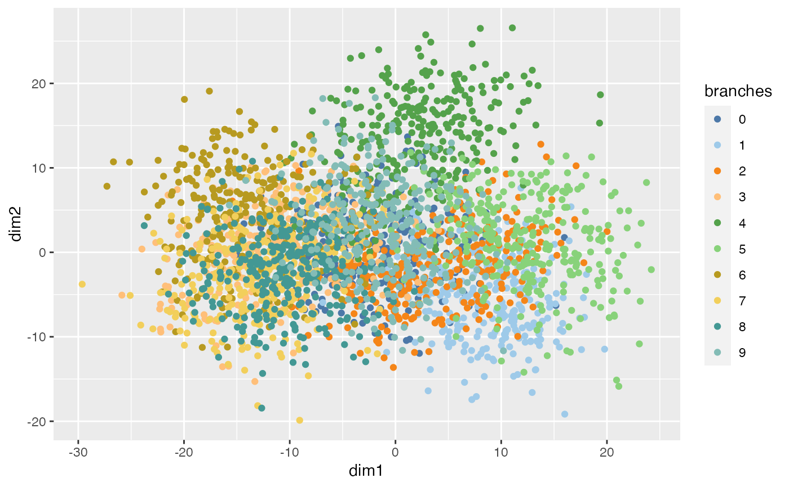

liminal color palettes
limn_pal_tableau10()
limn_pal_tableau20()A character vector of hex color codes of length 10 or 20.
Vectors of colors based on the schemes available in Vega-Lite.
Their main purpose is so you can use these palettes in ggplot2 graphics,
so that graphs align with the limn_tour() functions.
https://vega.github.io/vega/docs/schemes/
if (requireNamespace("ggplot2", quietly = TRUE)) {
library(ggplot2)
ggplot(fake_trees, aes(x = dim1, y = dim2, color = branches)) +
geom_point() +
scale_color_manual(values = limn_pal_tableau10())
ggplot(fake_trees, aes(x = dim1, y = dim2, color = branches)) +
geom_point() +
scale_color_manual(values = limn_pal_tableau20())
}
